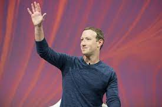

Mark Elliot Zuckerberg é um magnata, empresário e filantropo norte-americano, Ele é conhecido por co-fundar o site de mídia social Facebook e sua empresa-mãe Meta Platforms (anteriormente Facebook), da qual ele é presidente, diretor executivo e acionista controlador.Em março de 2011, a revista Forbes colocou Zuckerberg na 36ª posição da lista das pessoas mais ricas do mundo, com uma fortuna estimada em 17,5 bilhões de dólares.Em junho de 2015, sua fortuna já estava avaliada em 38,4 bilhões de dólares,em 2016 seu patrimônio líquido foi estimado em 51,8 bilhões de dólares.
Junto aos seus colegas da faculdade da Universidade de Harvard, os estudantes Eduardo Saverin, Andrew McCollum, Dustin Moskovitz e Chris Hughes, lançou o Facebook em 2004.
O Facebook expandiu-se rapidamente, com um bilhão de usuários até 2012.
Zuckerberg foi envolvido em várias disputas legais que foram iniciadas por outros no grupo, que reivindicou uma participação da empresa com base na sua participação durante a fase de desenvolvimento do Facebook.

Em dezembro de 2012, Zuckerberg e sua esposa Priscilla Chan anunciaram que dariam a maior parte de sua riqueza ao longo de suas vidas para "fazer avançar o potencial humano e promover a igualdade" no espírito de The Giving Pledge.Em 01 de dezembro de 2015, eles anunciaram que dariam 99% de suas ações do Facebook (no valor de cerca de 45 bilhões de dólares na época) para a Iniciativa Zuckerberg Chan.
Desde 2010, a revista Time nomeou Zuckerberg entre as 100 pessoas mais ricas e influentes do mundo e também foi nomeado pela revista como a Pessoa do Ano.Em dezembro de 2016, Zuckerberg ficou em 10º lugar na lista da Forbes das pessoas mais poderosas do mundo.